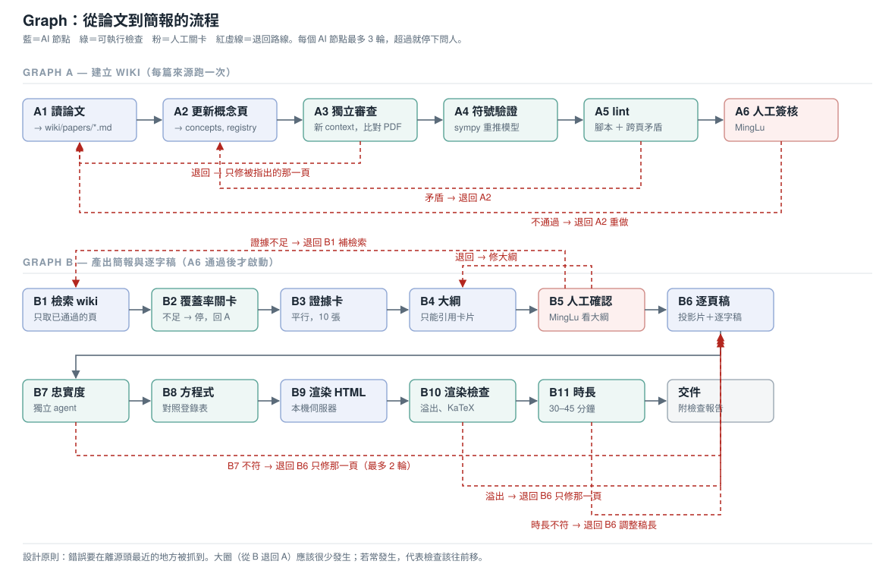

用 LLM Wiki ＋ graph 流程，把一篇賽局論文變成 30–45 分鐘的研討會報告
把 Karpathy 的 LLM Wiki 方法套到讀論文上：五篇論文先進唯讀的 raw/，
經過一條有驗證關卡的 graph（不是單一 loop）累積成 wiki，再由第二條 graph
只根據通過驗證的 wiki 產出簡報與逐字稿。主來源是
Kopel (2021, Decisions in Economics and Finance 44: 489–505, CC BY 4.0)，
做完整深度；另外四篇做輕量深度並標示。
整條流程的設計原則是一句話：錯誤要在離源頭最近的地方被抓到。 每一道關卡都是一支腳本或一份有逐條判定的獨立審查報告——「檢查一下」不算驗證。

| 關卡 | 結果 |
|---|---|
| A4 符號驗證 | 12/12 方程式精確相符；論文未說明的 γmax = 0.810736 經追查是 θ=0 時追隨者的內部解邊界 |
| A3 獨立審查（第一輪） | FAIL — 5 個 blocker，含一條論文裡並不存在的引文 |
| A5 跨頁矛盾 | FAIL — 1 個 blocker：兩頁寫著錯誤的因果，而反證就在 wiki 自己登錄的數字裡 |
| B7 忠實度 | FAIL — 1 個 blocker：卡片承載的引文比 wiki 短，使投影片失去依據 |
| B8 / B10 / B11 | PASS — 方程式全在登錄表內、37 頁零溢出、36.2 分鐘 |
| 第六節反思 | 另外兩輪獨立審查：第一輪 FAIL（8 項必改）、第二輪 PASS WITH FIXES（9 項） |
領導者的先行者優勢消失之後，它仍然在嚇阻、仍然在超額投資——三個門檻嚴格排序， 而且相差的倍數隨競爭強度遞減（γ=0.8 約 6 倍、γ=0.3 約 105 倍、γ=0.1 約 940 倍）。 所以「先行者優勢死於嚇阻失效」這個直覺解釋是錯的。
這個發現不是靠更仔細讀論文得到的，是 A5 跨頁一致性檢查的副產品—— 那一刻流程在反駁撰寫者自己寫下的因果解釋。兩位獨立審查者各自從論文的 eq. (1) 重解賽局，都重現了這三個倍數。
| 檔案 | 內容 |
|---|---|
| 繳交內容.md | 六節繳交文件；第六節回答作業的三個問題 |
| log.md | 80 筆執行紀錄，其中 43 筆改變了流程——反思的素材 |
| AGENTS.md | 這套流程的規格書：每個節點可讀什麼、可寫什麼、不可做什麼 |
| checks/ | 六份逐條判定的檢查報告 |
| scripts/ | 8 支 Python ＋ 1 支瀏覽器端檢查腳本，可重跑 |
| notes/script.md | 英文逐字稿，4,710 字 |